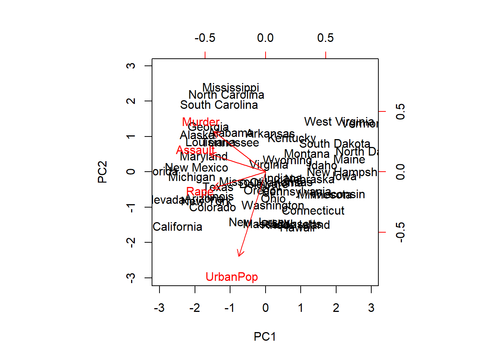
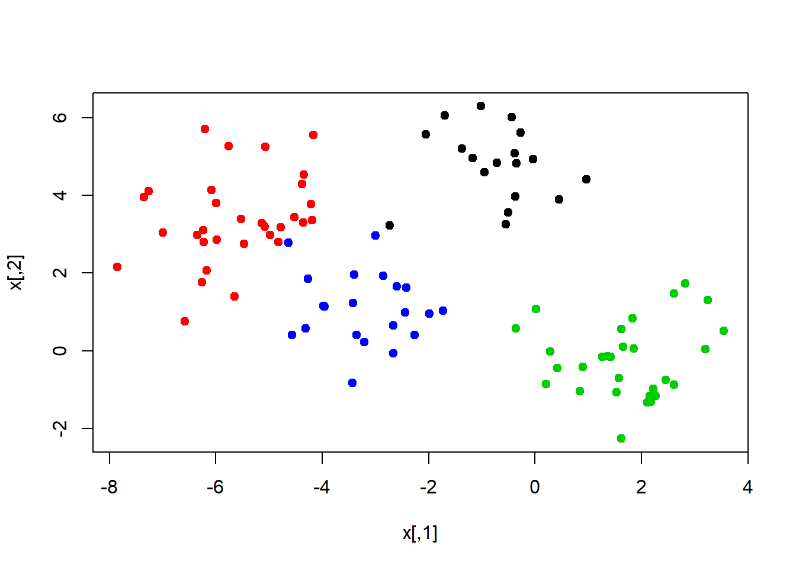
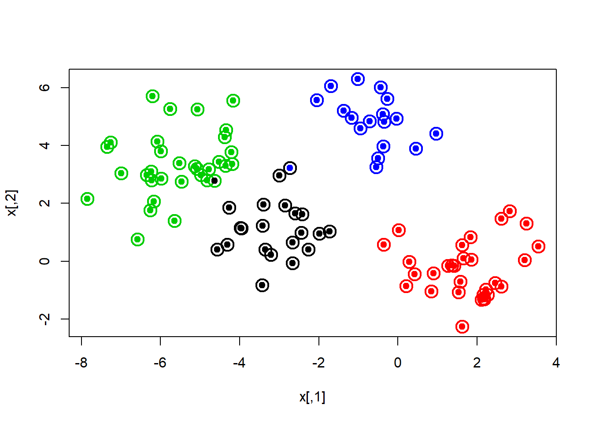
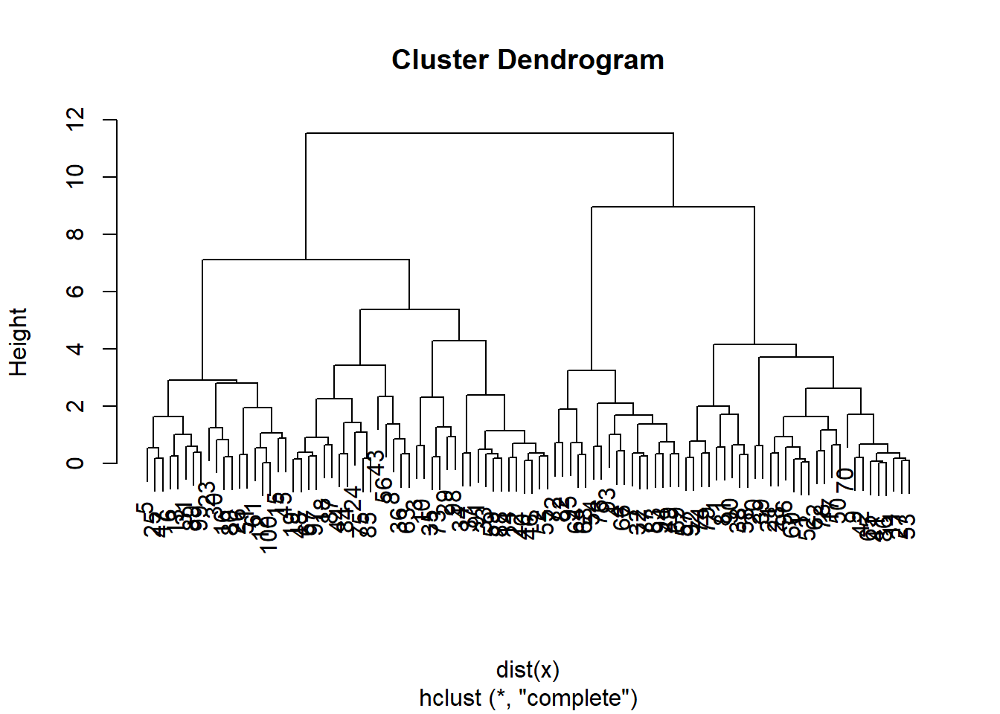
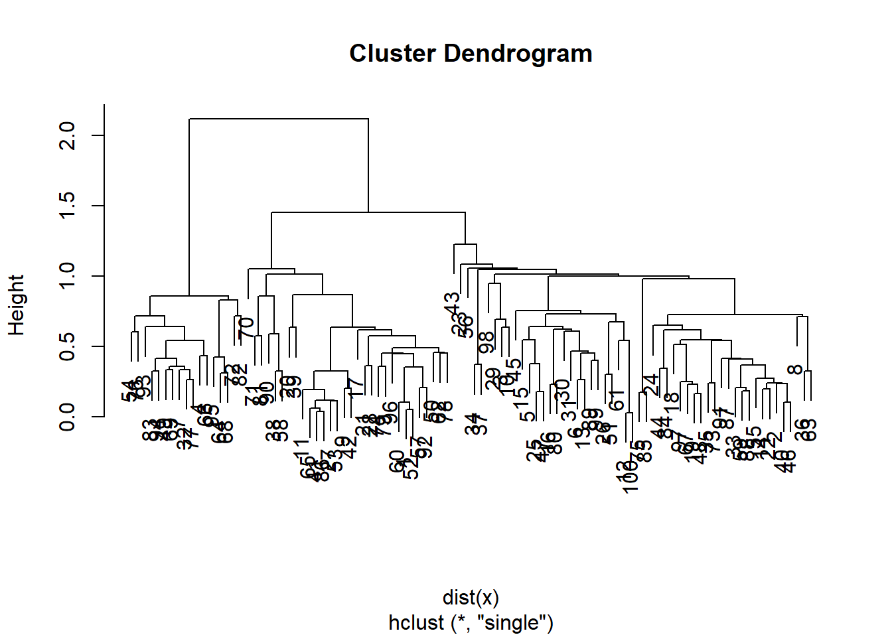
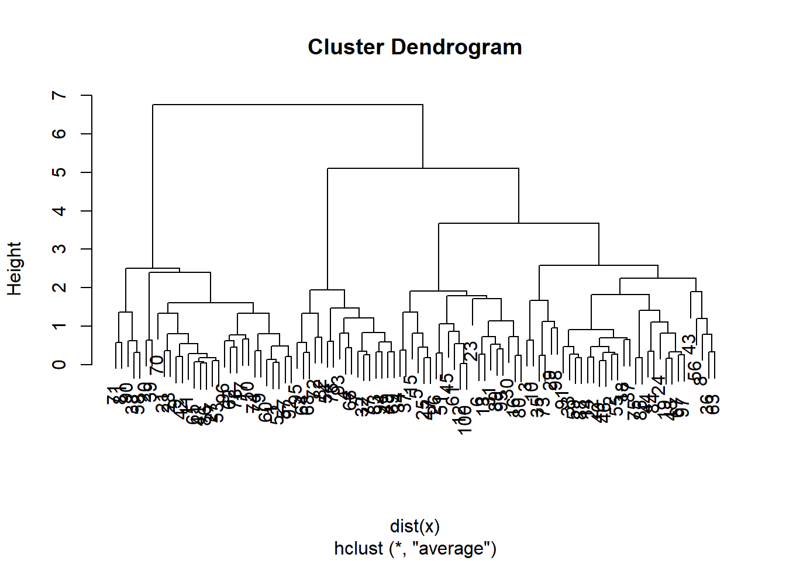
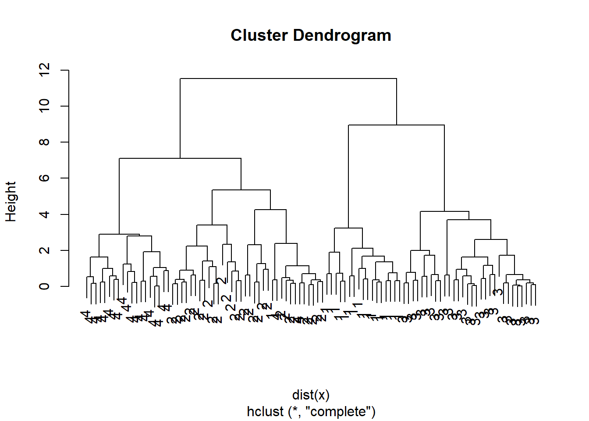

We will use the USArrests data (which is in R)
dimnames(USArrests)## [[1]]
## [1] "Alabama" "Alaska" "Arizona" "Arkansas"
## [5] "California" "Colorado" "Connecticut" "Delaware"
## [9] "Florida" "Georgia" "Hawaii" "Idaho"
## [13] "Illinois" "Indiana" "Iowa" "Kansas"
## [17] "Kentucky" "Louisiana" "Maine" "Maryland"
## [21] "Massachusetts" "Michigan" "Minnesota" "Mississippi"
## [25] "Missouri" "Montana" "Nebraska" "Nevada"
## [29] "New Hampshire" "New Jersey" "New Mexico" "New York"
## [33] "North Carolina" "North Dakota" "Ohio" "Oklahoma"
## [37] "Oregon" "Pennsylvania" "Rhode Island" "South Carolina"
## [41] "South Dakota" "Tennessee" "Texas" "Utah"
## [45] "Vermont" "Virginia" "Washington" "West Virginia"
## [49] "Wisconsin" "Wyoming"
##
## [[2]]
## [1] "Murder" "Assault" "UrbanPop" "Rape"apply(USArrests, 2, mean)## Murder Assault UrbanPop Rape
## 7.788 170.760 65.540 21.232apply(USArrests, 2, var)## Murder Assault UrbanPop Rape
## 18.97047 6945.16571 209.51878 87.72916We see that Assault has a much larger variance than the other variables. It would dominate the principal components, so we choose to standardize the variables when we perform PCA
pca.out <-prcomp(USArrests, scale=TRUE)
pca.out## Standard deviations (1, .., p=4):
## [1] 1.5748783 0.9948694 0.5971291 0.4164494
##
## Rotation (n x k) = (4 x 4):
## PC1 PC2 PC3 PC4
## Murder -0.5358995 0.4181809 -0.3412327 0.64922780
## Assault -0.5831836 0.1879856 -0.2681484 -0.74340748
## UrbanPop -0.2781909 -0.8728062 -0.3780158 0.13387773
## Rape -0.5434321 -0.1673186 0.8177779 0.08902432names(pca.out)## [1] "sdev" "rotation" "center" "scale" "x"biplot(pca.out, scale=0)
K-means works in any dimension, but is most fun to demonstrate in two, because we can plot pictures. Lets make some data with clusters. We do this by shifting the means of the points around.
set.seed(101)
x <- matrix(rnorm(100*2), 100, 2)
xmean <- matrix(rnorm(8, sd=4), 4, 2)
which <- sample(1:4, 100, replace = TRUE)
x <- x + xmean[which, ]
plot(x, col = which, pch = 19)
We know the “true” cluster IDs, but we wont tell that to the kmeans algorithm.
km.out <- kmeans(x, 4, nstart = 15)
km.out## K-means clustering with 4 clusters of sizes 21, 30, 32, 17
##
## Cluster means:
## [,1] [,2]
## 1 -3.1068542 1.1213302
## 2 1.7226318 -0.2584919
## 3 -5.5818142 3.3684991
## 4 -0.6148368 4.8861032
##
## Clustering vector:
## [1] 2 3 3 4 1 1 4 3 2 3 2 1 1 3 1 1 2 3 3 2 2 3 1 3 1 1 2 2 3 1 1 4 3 1 3
## [36] 3 1 2 2 3 2 2 3 3 1 3 1 3 4 2 1 2 2 4 3 3 2 2 3 2 1 2 3 4 2 4 3 4 4 2
## [71] 2 4 3 2 3 4 4 2 2 1 2 4 4 3 3 2 3 3 1 2 3 2 4 4 4 2 3 3 1 1
##
## Within cluster sum of squares by cluster:
## [1] 30.82790 54.48008 71.98228 21.04952
## (between_SS / total_SS = 87.6 %)
##
## Available components:
##
## [1] "cluster" "centers" "totss" "withinss"
## [5] "tot.withinss" "betweenss" "size" "iter"
## [9] "ifault"plot(x, col=km.out$cluster, cex=2, pch=1, lwd=2)
points(x, col=which, pch=19)
points(x, col=c(4,3,2,1)[which], pch=19)
We will use these same data and use hierarchical clustering
hc.complete <-hclust(dist(x), method = "complete")
plot(hc.complete)
hc.single <- hclust(dist(x), method = "single")
plot(hc.single)
hc.average <- hclust(dist(x), method = "average")
plot(hc.average)
Lets compare this with the actualy clusters in the data. We will use the function cutree to cut the tree at level 4. This will produce a vector of numbers from 1 to 4, saying which branch each observation is on. You will sometimes see pretty plots where the leaves of the dendrogram are colored. I searched a bit on the web for how to do this, and its a little too complicated for this demonstration.
We can use table to see how well they match:
hc.cut <- cutree(hc.complete, 4)
table(hc.cut, which)## which
## hc.cut 1 2 3 4
## 1 0 0 30 0
## 2 1 31 0 2
## 3 17 0 0 0
## 4 0 0 0 19table(hc.cut, km.out$cluster)##
## hc.cut 1 2 3 4
## 1 0 30 0 0
## 2 2 0 32 0
## 3 0 0 0 17
## 4 19 0 0 0Or, we can use our group membership as labels for the leaves of the dendrogram:
plot(hc.complete, labels=which)